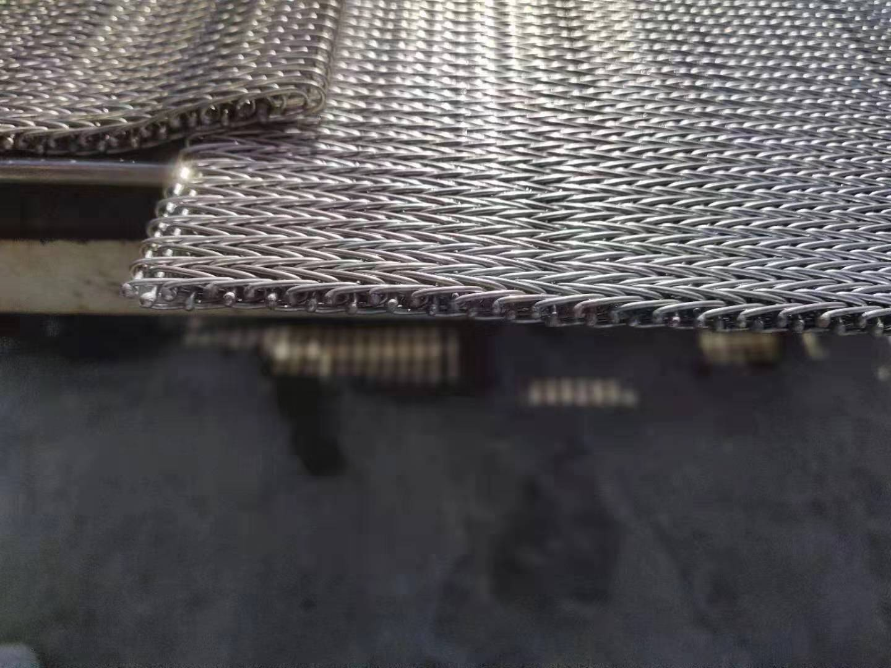

How the Double-Spiral Structure Works - and Why Density Matters
A standard balanced weave belt uses one spiral coil per pitch unit - left-hand and right-hand spirals alternating across the belt width, connected by straight cross rods. The compound weave belt uses two interlocked spiral coils per pitch unit. The result is approximately twice the number of wire contact points per unit area, producing a measurably denser mesh surface.
This density difference has practical consequences. The smaller effective mesh opening allows smaller products to be conveyed without falling through, dropping, or deforming under their own weight. The denser surface distributes load more evenly across the product contact area - reducing contact pressure and surface marking on soft products such as dough, pastries, biscuits, and formed food items. It also provides better drainage uniformity in washing and air-cooling applications, where a coarser mesh would allow uneven water or airflow distribution.


